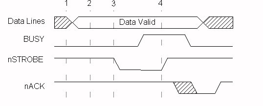

Compatibility Mode
This mode defines the protocol used by most PCs to transfer data to a printer. It is commonly called the "Centronics" mode and is the method utilized with the standard parallel port. In this mode, data is placed on the port's data lines, the printer status is checked for no errors and that it is not Busy, and then a data Strobe is generated by the software to clock the data to the printer. Figure 1 describes this transfer.

Figure
1 -- Compatibility Mode Data Transfer Cycle
Compatibility Mode phase transitions:
As can be seen, in order to output one byte of data it requires four I/O instructions and at least as many additional instructions. The net effect of this is a limitation on the bandwidth capabilities of the port on the order of 150K bytes per second. This bandwidth is sufficient for communicating with dot matrix and many older laser printers, but a limitation when communicating with pocket LAN adapters, removable disk drives, and the newest generation of laser printers, to name a few. Of course, this mode is for the forward channel only and must be combined with a reverse channel mode in order to have a complete bi-directional channel. This mode was included as a way to provide backward compatibility with the huge base of installed printers and peripherals. The other modes are used to provide the reverse channel and high performance communication links. Many of the integrated 1284 I/O controllers have implemented a mode that uses a FIFO buffer to transfer data with the Compatibility mode protocol. This mode is referred to as "Fast Centronics" or "Parallel Port FIFO Mode". When this mode is enabled, data written to the FIFO port will be transferred to the printer using hardware generated strobes for the handshaking. Since there is very little latency between transfers, and the software does not have to do any of the strobing or handshake checking, data rates over 500K bytes per second are achievable with some systems. This mode, however, is not an IEEE 1284 defined mode and is not described in the standard.